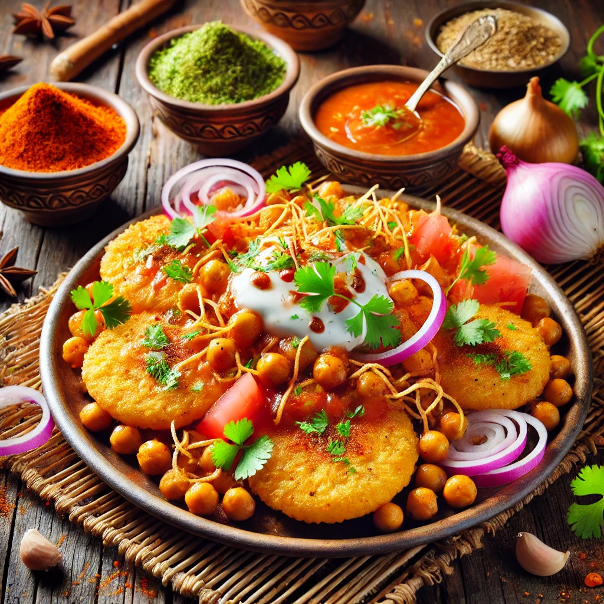
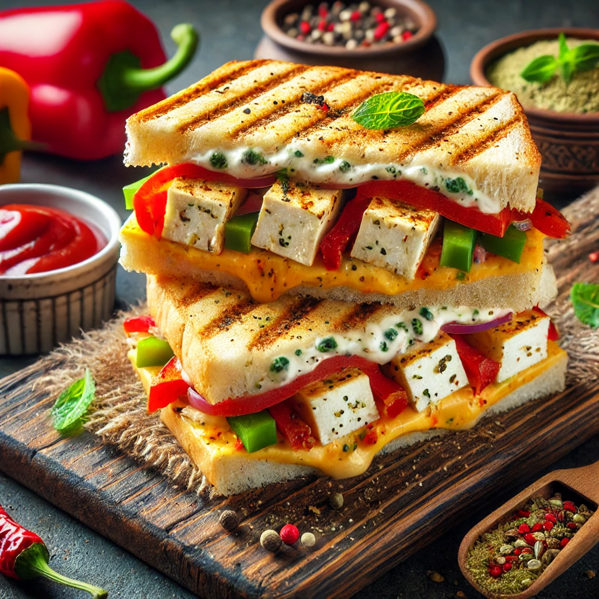
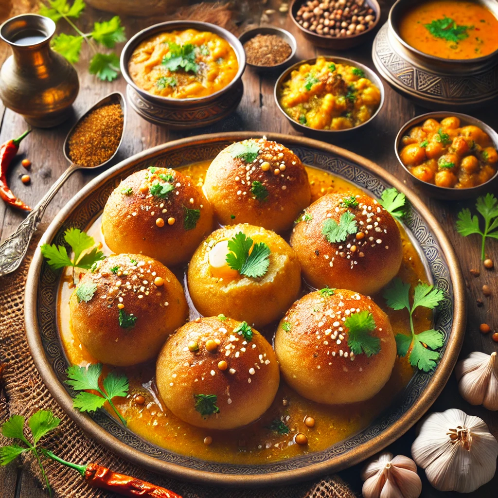

Chole Tikiya
Ingredients :
- 4 medium potatoes, boiled and mashed
- 1/2 cup bread crumbs
- 1 green chili, finely chopped
- 1 cup chickpeas (soaked overnight and boiled)
- 1 large onion, finely chopped
- Oil for cooking
- Mint chutney
- Tamarind chutney
- Sev
- Chopped onions, tomatoes, and cilantro
Process :
- Mix the mashed potatoes with bread crumbs, green chili, red chili powder, cumin powder, garam masala, and salt.
- Shape into small patties and shallow fry them on medium heat until golden brown on both sides. Set aside.
- Heat oil in a pan and add onions; sauté until golden.
- Add ginger-garlic paste and green chilies, sauté until raw aroma disappears.Add chopped tomatoes and cook until soft.
- Add all spices (turmeric, red chili powder, coriander powder, cumin powder, and salt).Add boiled chickpeas, mix well, and cook for 10 minutes, adding water to achieve desired consistency.
- Add garam masala and chaat masala; garnish with cilantro.
- Place the Tikiya on a plate, pour Chhole on top.
- Garnish with onions, tomatoes, cilantro, and a sprinkle of chaat masala.
- Add a drizzle of yogurt and sev, if desired.
- Serve with tamarind and mint chutney.

Click Here to Buy
Panner Cheese Sandwich
Ingredients :
- 4 slices of bread (whole wheat or white)
- 100g paneer (cottage cheese), crumbled or cut into small cubes
- 1/2 cup grated cheese (cheddar or mozzarella)
- 1/4 cup finely chopped bell peppers (mixed colors)
- 1/4 cup finely chopped onions
- 1 green chili, finely chopped (optional)
- 1/2 tsp chaat masala or Italian seasoning (optional)
- Butter for spreading
Process :
- In a bowl, mix crumbled paneer, grated cheese, bell peppers, onions, green chili, salt, pepper, and seasoning. Combine well.
- Take a slice of bread and spread a thin layer of butter. Add a generous amount of the paneer-cheese filling and spread evenly. Top with another bread slice.
- Heat a pan or sandwich maker. Place the sandwich on the pan and toast on medium heat until both sides are golden brown and crispy, with cheese melted inside.
- Slice in half, garnish with fresh herbs, and serve with ketchup or green chutney on the side.

Dal Baati
Ingredients :
- 2 cups whole wheat flour
- 1/4 cup semolina (optional, for extra crunch)
- 1/4 cup ghee (clarified butter)
- Water as needed
- Salt to taste
- 1 cup pigeon pea (toor dal)
- 1 chopped tomato,1 chopped onion,1 green chili, chopped
- 1/2 tsp turmeric powder 1 tsp red chili powder 1/2 tsp cumin seeds 1/2 tsp mustard seeds 1/2 tsp garam masala Fresh cilantro for garnish
Process :
- Mix whole wheat flour, semolina, salt, and baking soda. Add ghee and mix until crumbly. Add water gradually to form a firm dough.
- Divide the dough into small balls and shape each into a round baati. Preheat the oven to 180°C (350°F) and bake for 25-30 minutes, turning once halfway, until golden and crispy.
- Rinse and soak the dals for 30 minutes. Cook with turmeric and salt until soft (use a pressure cooker for quicker results).
- Heat ghee in a pan. Add cumin seeds, mustard seeds, green chili, and chopped onions; sauté until golden. Add chopped tomatoes, red chili powder, and garam masala, and cook until the tomatoes soften.
- Pour the cooked dal into the tempering and mix well. Add water as needed to adjust consistency and simmer for a few minutes. Garnish with fresh cilantro..
- Place the baatis on a plate, crack them open, drizzle with ghee, and serve with dal, garlic chutney, and extra ghee on the side.
